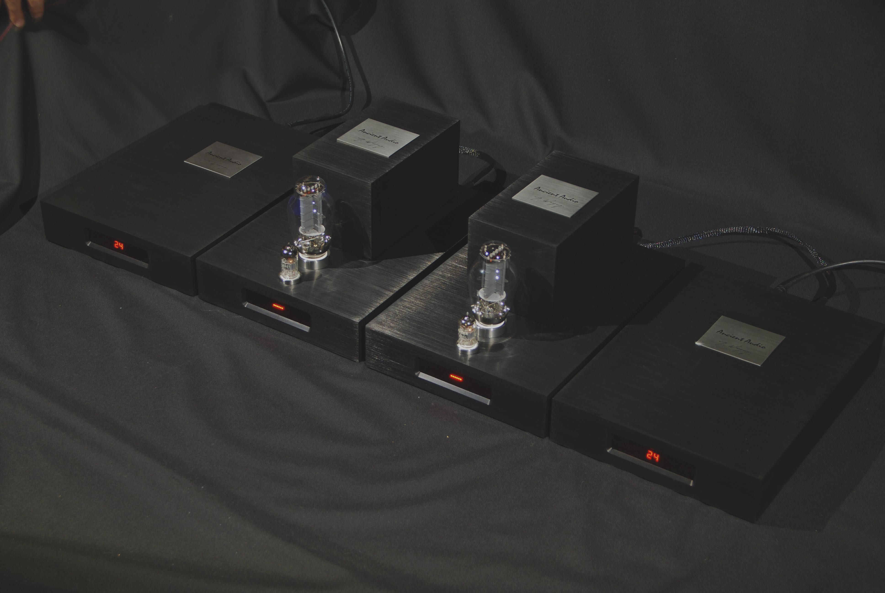
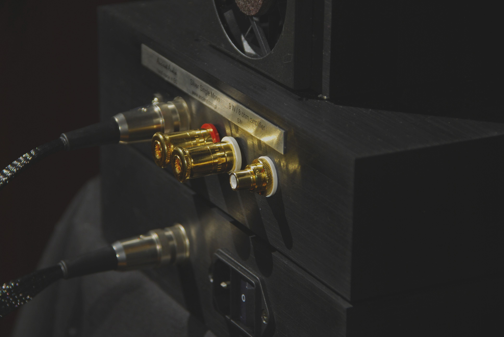

Silver Mono
Applied innovative solutions , for classic 300 B concept crearted not only company flagship, but also one of the best audio amplifer ever made. Fast solid state power supply, multiple decoupling power stages, silver wired output transformer, dual mono / dual extrenal power supply, no feedback output stage set new rules of top-hi end amplifiers design. Constantly developed, „Silver Grand Mono” is still reference amplifer. However, even king has some limits. First was use of double 300 B per chanel. It was not only costly, but generates some troubles with purchase rare editions of tubes. Second, was long way of power lines; from power supply via 1 meter power cable , then power socket to amplifer. Eventually These disadvantages were lead us to design „Silver Single Mono” It still keeps main principles of „Silver Grand Mono”. But it has only one 300 B tube per chanel. This solution is prefered by some audiophiles. Single tube will be always more linear, than two tubes connected in paralell. Power is lower , 8 W per chanell, but it is sufficient for many systems, where sound quality is over loudness.
First, mains AC power is changed to very stable 24 V DC. It also makes a first stage of galvanic separation. This DC power supply bases on switching way, so power transformer is very small, with small capacitance. It prevents to come mains power noise between winding of transformer. Then, DC 24 V is feeding monoblock next switching power supply.
It makes all voltages, needed for 300 B amplifer:
Power supply has two separates transformers to minimize interference. They are driving by separate MOS switches, but with common frequency. Additionally, voltages are stabilised by high accuracy linear regulators. Whole unit has another unique feature: start up is very slow, it takes 60 seconds. Eventually, all voltges are growing very gradually. It prevents 300 B delicate cathode wire from thermal shock. Tube fatigue is much lower, and life of sometimes very expencive and rare tubes is significancy longer. As well as „Single Grand Mono”, new monoblocks has unique auto bias iddle current circuit. It makes amplifier totally mainternace free, keeping requied bias same, after change, or ageing. Another advantage this complex power supply is extremally low noise of amplifer. It is important, when connected to high efficiency speakers.
